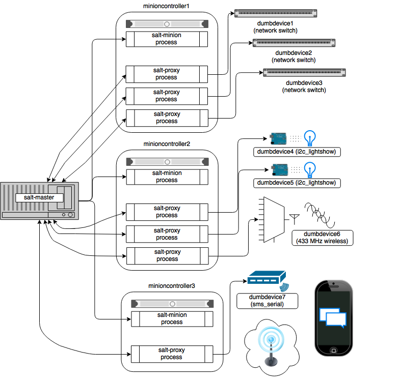

Salt Proxy Minion¶
Proxy minions are a developing Salt feature that enables controlling devices that, for whatever reason, cannot run a standard salt-minion. Examples include network gear that has an API but runs a proprietary OS, devices with limited CPU or memory, or devices that could run a minion, but for security reasons, will not.
Proxy minions are not an "out of the box" feature. Because there are an infinite number of controllable devices, you will most likely have to write the interface yourself. Fortunately, this is only as difficult as the actual interface to the proxied device. Devices that have an existing Python module (PyUSB for example) would be relatively simple to interface. Code to control a device that has an HTML REST-based interface should be easy. Code to control your typical housecat would be excellent source material for a PhD thesis.
Salt proxy-minions provide the 'plumbing' that allows device enumeration and discovery, control, status, remote execution, and state management.
See the Proxy Minion Walkthrough for an end-to-end demonstration of a working proxy minion.
See the Proxy Minion SSH Walkthrough for an end-to-end demonstration of a working SSH proxy minion.
See Proxyminion States to configure and
run salt-proxy on a remote minion. Specify all your master side
proxy (pillar) configuration and use this state to remotely configure proxies on one
or more minions.
See Proxyminion Beacon to help
with easy configuration and management of salt-proxy processes.
New in 2015.8.2¶
BREAKING CHANGE: Adding the proxymodule variable to __opts__ is deprecated. The proxymodule variable has been moved a new globally-injected variable called __proxy__. A related configuration option called add_proxymodule_to_opts has been added and defaults to True. In the next major release, 2016.3.0, this variable will default to False.
In the meantime, proxies that functioned under 2015.8.0 and .1 should continue to work under 2015.8.2. You should rework your proxy code to use __proxy__ as soon as possible.
The rest_sample example proxy minion has been updated to use __proxy__.
This change was made because proxymodules are a LazyLoader object, but LazyLoaders cannot be serialized. __opts__ gets serialized, and so things like saltutil.sync_all and state.highstate would throw exceptions.
Also in this release, proxymodules can be stored on the master in /srv/salt/_proxy. A new saltutil function called sync_proxies will transfer these to remote proxy minions. Note that you must restart the salt-proxy daemon to pick up these changes.
In addition, a salt.utils helper function called is_proxy() was added to make it easier to tell when the running minion is a proxy minion.
New in 2015.8¶
Starting with the 2015.8 release of Salt, proxy processes are no longer forked off from a controlling minion.
Instead, they have their own script salt-proxy which takes mostly the same arguments that the
standard Salt minion does with the addition of --proxyid. This is the id that the salt-proxy will
use to identify itself to the master. Proxy configurations are still best kept in Pillar and their format
has not changed.
This change allows for better process control and logging. Proxy processes can now be listed with standard
process management utilities (ps from the command line). Also, a full Salt minion is no longer
required (though it is still strongly recommended) on machines hosting proxies.
Getting Started¶
The following diagram may be helpful in understanding the structure of a Salt installation that includes proxy-minions:
The key thing to remember is the left-most section of the diagram. Salt's nature is to have a minion connect to a master, then the master may control the minion. However, for proxy minions, the target device cannot run a minion.
After the proxy minion is started and initiates its connection to the 'dumb' device, it connects back to the salt-master and for all intents and purposes looks like just another minion to the Salt master.
To create support for a proxied device one needs to create four things:
- The proxy_connection_module (located in salt/proxy).
- The grains support code (located in salt/grains).
- Salt modules specific to the controlled device.
- Salt states specific to the controlled device.
Configuration parameters¶
Proxy minions require no configuration parameters in /etc/salt/master.
Salt's Pillar system is ideally suited for configuring proxy-minions. Proxies can either be designated via a pillar file in pillar_roots, or through an external pillar. External pillars afford the opportunity for interfacing with a configuration management system, database, or other knowledgeable system that that may already contain all the details of proxy targets. To use static files in pillar_roots, pattern your files after the following examples, which are based on the diagram above:
/srv/pillar/top.sls
base:
dumbdevice1:
- dumbdevice1
dumbdevice2:
- dumbdevice2
dumbdevice3:
- dumbdevice3
dumbdevice4:
- dumbdevice4
dumbdevice5:
- dumbdevice5
dumbdevice6:
- dumbdevice6
dumbdevice7:
- dumbdevice7
/srv/pillar/dumbdevice1.sls
proxy:
proxytype: networkswitch
host: 172.23.23.5
username: root
passwd: letmein
/srv/pillar/dumbdevice2.sls
proxy:
proxytype: networkswitch
host: 172.23.23.6
username: root
passwd: letmein
/srv/pillar/dumbdevice3.sls
proxy:
proxytype: networkswitch
host: 172.23.23.7
username: root
passwd: letmein
/srv/pillar/dumbdevice4.sls
proxy:
proxytype: i2c_lightshow
i2c_address: 1
/srv/pillar/dumbdevice5.sls
proxy:
proxytype: i2c_lightshow
i2c_address: 2
/srv/pillar/dumbdevice6.sls
proxy:
proxytype: 433mhz_wireless
/srv/pillar/dumbdevice7.sls
proxy:
proxytype: sms_serial
deventry: /dev/tty04
Note the contents of each minioncontroller key may differ widely based on the type of device that the proxy-minion is managing.
In the above example
- dumbdevices 1, 2, and 3 are network switches that have a management interface available at a particular IP address.
- dumbdevices 4 and 5 are very low-level devices controlled over an i2c bus. In this case the devices are physically connected to machine 'minioncontroller2', and are addressable on the i2c bus at their respective i2c addresses.
- dumbdevice6 is a 433 MHz wireless transmitter, also physically connected to minioncontroller2
- dumbdevice7 is an SMS gateway connected to machine minioncontroller3 via a serial port.
Because of the way pillar works, each of the salt-proxy processes that fork off the proxy minions will only see the keys specific to the proxies it will be handling.
Also, in general, proxy-minions are lightweight, so the machines that run them
could conceivably control a large number of devices. To run more than one proxy from
a single machine, simply start an additional proxy process with --proxyid
set to the id to which you want the proxy to bind.
It is possible for the proxy services to be spread across
many machines if necessary, or intentionally run on machines that need to
control devices because of some physical interface (e.g. i2c and serial above).
Another reason to divide proxy services might be security. In more secure
environments only certain machines may have a network path to certain devices.
Proxymodules¶
A proxy module encapsulates all the code necessary to interface with a device. Proxymodules are located inside the salt.proxy module. At a minimum a proxymodule object must implement the following functions:
__virtual__(): This function performs the same duty that it does for other
types of Salt modules. Logic goes here to determine if the module can be
loaded, checking for the presence of Python modules on which the proxy depends.
Returning False will prevent the module from loading.
init(opts): Perform any initialization that the device needs. This is
a good place to bring up a persistent connection to a device, or authenticate
to create a persistent authorization token.
shutdown(): Code to cleanly shut down or close a connection to
a controlled device goes here. This function must exist, but can contain only
the keyword pass if there is no shutdown logic required.
ping(): While not required, it is highly recommended that this function also
be defined in the proxymodule. The code for ping should contact the
controlled device and make sure it is really available.
Pre 2015.8 the proxymodule also must have an id() function. 2015.8 and following don't use
this function because the proxy's id is required on the command line.
id(opts): Returns a unique, unchanging id for the controlled device. This is
the "name" of the device, and is used by the salt-master for targeting and key
authentication.
Here is an example proxymodule used to interface to a very simple REST server. Code for the server is in the salt-contrib GitHub repository
This proxymodule enables "service" enumeration, starting, stopping, restarting, and status; "package" installation, and a ping.
# -*- coding: utf-8 -*-
'''
This is a simple proxy-minion designed to connect to and communicate with
the bottle-based web service contained in
https://github.com/saltstack/salt-contrib/proxyminion_rest_example
'''
from __future__ import absolute_import
# Import python libs
import logging
import salt.utils.http
HAS_REST_EXAMPLE = True
# This must be present or the Salt loader won't load this module
__proxyenabled__ = ['rest_sample']
# Variables are scoped to this module so we can have persistent data
# across calls to fns in here.
GRAINS_CACHE = {}
DETAILS = {}
# Want logging!
log = logging.getLogger(__file__)
# This does nothing, it's here just as an example and to provide a log
# entry when the module is loaded.
def __virtual__():
'''
Only return if all the modules are available
'''
log.debug('rest_sample proxy __virtual__() called...')
return True
# Every proxy module needs an 'init', though you can
# just put a 'pass' here if it doesn't need to do anything.
def init(opts):
log.debug('rest_sample proxy init() called...')
# Save the REST URL
DETAILS['url'] = opts['proxy']['url']
# Make sure the REST URL ends with a '/'
if not DETAILS['url'].endswith('/'):
DETAILS['url'] += '/'
def id(opts):
'''
Return a unique ID for this proxy minion. This ID MUST NOT CHANGE.
If it changes while the proxy is running the salt-master will get
really confused and may stop talking to this minion
'''
r = salt.utils.http.query(opts['proxy']['url']+'id', decode_type='json', decode=True)
return r['dict']['id'].encode('ascii', 'ignore')
def grains():
'''
Get the grains from the proxied device
'''
if not GRAINS_CACHE:
r = salt.utils.http.query(DETAILS['url']+'info', decode_type='json', decode=True)
GRAINS_CACHE = r['dict']
return GRAINS_CACHE
def grains_refresh():
'''
Refresh the grains from the proxied device
'''
GRAINS_CACHE = {}
return grains()
def service_start(name):
'''
Start a "service" on the REST server
'''
r = salt.utils.http.query(DETAILS['url']+'service/start/'+name, decode_type='json', decode=True)
return r['dict']
def service_stop(name):
'''
Stop a "service" on the REST server
'''
r = salt.utils.http.query(DETAILS['url']+'service/stop/'+name, decode_type='json', decode=True)
return r['dict']
def service_restart(name):
'''
Restart a "service" on the REST server
'''
r = salt.utils.http.query(DETAILS['url']+'service/restart/'+name, decode_type='json', decode=True)
return r['dict']
def service_list():
'''
List "services" on the REST server
'''
r = salt.utils.http.query(DETAILS['url']+'service/list', decode_type='json', decode=True)
return r['dict']
def service_status(name):
'''
Check if a service is running on the REST server
'''
r = salt.utils.http.query(DETAILS['url']+'service/status/'+name, decode_type='json', decode=True)
return r['dict']
def package_list():
'''
List "packages" installed on the REST server
'''
r = salt.utils.http.query(DETAILS['url']+'package/list', decode_type='json', decode=True)
return r['dict']
def package_install(name, **kwargs):
'''
Install a "package" on the REST server
'''
cmd = DETAILS['url']+'package/install/'+name
if 'version' in kwargs:
cmd += '/'+kwargs['version']
else:
cmd += '/1.0'
r = salt.utils.http.query(cmd, decode_type='json', decode=True)
def package_remove(name):
'''
Remove a "package" on the REST server
'''
r = salt.utils.http.query(DETAILS['url']+'package/remove/'+name, decode_type='json', decode=True)
return r['dict']
def package_status(name):
'''
Check the installation status of a package on the REST server
'''
r = salt.utils.http.query(DETAILS['url']+'package/status/'+name, decode_type='json', decode=True)
return r['dict']
def ping():
'''
Is the REST server up?
'''
r = salt.utils.http.query(DETAILS['url']+'ping', decode_type='json', decode=True)
try:
return r['dict'].get('ret', False)
except Exception:
return False
def shutdown(opts):
'''
For this proxy shutdown is a no-op
'''
log.debug('rest_sample proxy shutdown() called...')
pass
Grains are data about minions. Most proxied devices will have a paltry amount
of data as compared to a typical Linux server. By default, a proxy minion will
have several grains taken from the host. Salt core code requires values for kernel,
os, and os_family--all of these are forced to be proxy for proxy-minions.
To add others to your proxy minion for
a particular device, create a file in salt/grains named [proxytype].py and place
inside it the different functions that need to be run to collect the data you
are interested in. Here's an example:
The __proxyenabled__ directive¶
Salt execution modules, by, and large, cannot "automatically" work
with proxied devices. Execution modules like pkg or sqlite3 have no
meaning on a network switch or a housecat. For an execution module to be
available to a proxy-minion, the __proxyenabled__ variable must be defined
in the module as an array containing the names of all the proxytypes that this
module can support. The array can contain the special value * to indicate
that the module supports all proxies.
If no __proxyenabled__ variable is defined, then by default, the
execution module is unavailable to any proxy.
Here is an excerpt from a module that was modified to support proxy-minions:
__proxyenabled__ = ['*']
[...]
def ping():
if not salt.utils.is_proxy():
return True
else:
ping_cmd = __opts__['proxy']['proxytype'] + '.ping'
if __opts__.get('add_proxymodule_to_opts', False):
return __opts__['proxymodule'][ping_cmd]()
else:
return __proxy__[ping_cmd]()
And then in salt.proxy.rest_sample.py we find
def ping():
'''
Is the REST server up?
'''
r = salt.utils.http.query(DETAILS['url']+'ping', decode_type='json', decode=True)
try:
return r['dict'].get('ret', False)
except Exception:
return False
SSH Proxymodules¶
See above for a general introduction to writing proxy modules.
All of the guidelines that apply to REST are the same for SSH.
This sections specifically talks about the SSH proxy module and
explains the working of the example proxy module ssh_sample.
Here is a simple example proxymodule used to interface to a device over SSH. Code for the SSH shell is in the salt-contrib GitHub repository
This proxymodule enables "package" installation.
# -*- coding: utf-8 -*-
'''
This is a simple proxy-minion designed to connect to and communicate with
a server that exposes functionality via SSH.
This can be used as an option when the device does not provide
an api over HTTP and doesn't have the python stack to run a minion.
'''
from __future__ import absolute_import
# Import python libs
import json
import logging
# Import Salt's libs
from salt.utils.vt_helper import SSHConnection
from salt.utils.vt import TerminalException
# This must be present or the Salt loader won't load this module
__proxyenabled__ = ['ssh_sample']
DETAILS = {}
# Want logging!
log = logging.getLogger(__file__)
# This does nothing, it's here just as an example and to provide a log
# entry when the module is loaded.
def __virtual__():
'''
Only return if all the modules are available
'''
log.info('ssh_sample proxy __virtual__() called...')
return True
def init(opts):
'''
Required.
Can be used to initialize the server connection.
'''
try:
DETAILS['server'] = SSHConnection(host=__opts__['proxy']['host'],
username=__opts__['proxy']['username'],
password=__opts__['proxy']['password'])
# connected to the SSH server
out, err = DETAILS['server'].sendline('help')
except TerminalException as e:
log.error(e)
return False
def shutdown(opts):
'''
Disconnect
'''
DETAILS['server'].close_connection()
def parse(out):
'''
Extract json from out.
Parameter
out: Type string. The data returned by the
ssh command.
'''
jsonret = []
in_json = False
for ln_ in out.split('\n'):
if '{' in ln_:
in_json = True
if in_json:
jsonret.append(ln_)
if '}' in ln_:
in_json = False
return json.loads('\n'.join(jsonret))
def package_list():
'''
List "packages" by executing a command via ssh
This function is called in response to the salt command
..code-block::bash
salt target_minion pkg.list_pkgs
'''
# Send the command to execute
out, err = DETAILS['server'].sendline('pkg_list')
# "scrape" the output and return the right fields as a dict
return parse(out)
def package_install(name, **kwargs):
'''
Install a "package" on the REST server
'''
cmd = 'pkg_install ' + name
if 'version' in kwargs:
cmd += '/'+kwargs['version']
else:
cmd += '/1.0'
# Send the command to execute
out, err = DETAILS['server'].sendline(cmd)
# "scrape" the output and return the right fields as a dict
return parse(out)
def package_remove(name):
'''
Remove a "package" on the REST server
'''
cmd = 'pkg_remove ' + name
# Send the command to execute
out, err = DETAILS['server'].sendline(cmd)
# "scrape" the output and return the right fields as a dict
return parse(out)
Connection Setup¶
The init() method is responsible for connection setup. It uses the host, username and password config variables defined in the pillar data. The prompt kwarg can be passed to SSHConnection if your SSH server's prompt differs from the example's prompt (Cmd). Instantiating the SSHConnection class establishes an SSH connection to the ssh server (using Salt VT).
Command execution¶
The package_* methods use the SSH connection (established in init()) to send commands out to the SSH server. The sendline() method of SSHConnection class can be used to send commands out to the server. In the above example we send commands like pkg_list or pkg_install. You can send any SSH command via this utility.
Output parsing¶
Output returned by sendline() is a tuple of strings representing the stdout and the stderr respectively. In the toy example shown we simply scrape the output and convert it to a python dictionary, as shown in the parse method. You can tailor this method to match your parsing logic.
Connection teardown¶
The shutdown method is responsible for calling the close_connection() method of SSHConnection class. This ends the SSH connection to the server.
For more information please refer to class SSHConnection.
Version 2016.3.0-182-gbed98d8